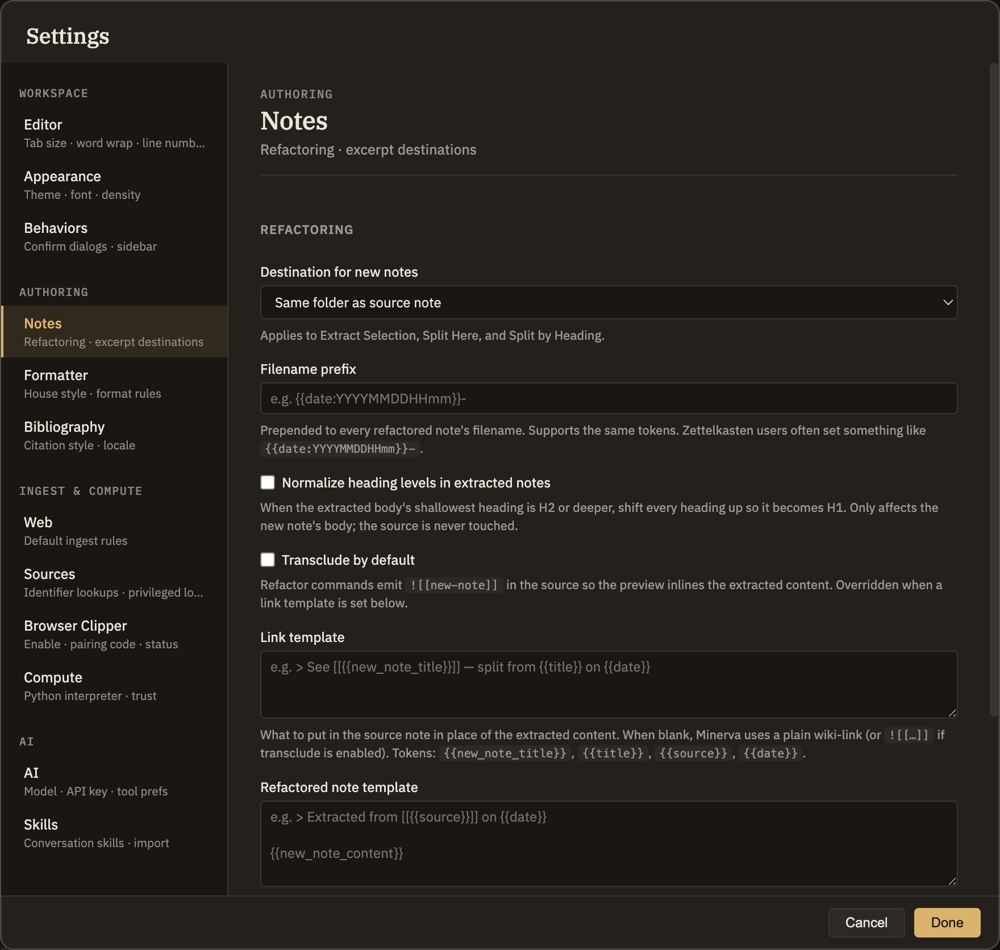

Minerva has commands that turn one note into several — pulling a selection into its own note, or splitting a long note apart. The Notes settings tab decides where those new notes go and how they're named, plus what gets left behind in the note you split from.
Splitting notes
These settings apply whenever you extract a selection into a new note or split a note into pieces. They're personal preferences for this computer, so they apply to every knowledge base you open here.
Where new notes go
Choose to file each new note in the same folder as the note you split from (the default), at the top of your knowledge base, or in a folder you name.
Custom folder
Shown when you choose to name your own folder. Type the folder path, optionally using the placeholders below to sort notes by date — for example, into a folder for the current year and month. Left blank, new notes land at the top of your knowledge base.
Filename start
Text you'd like added to the front of every new note's name. You can use the date placeholders below — for instance, to start each filename with a timestamp.
Tidy up heading levels
When on, if the extracted text starts at a lower heading level, its headings are lifted so the note begins with a top-level heading. Only the new note is adjusted; the note you split from is untouched.
Embed instead of link
When on, the note you split from shows the extracted content inline rather than just a link to it. If you set a link template below, that takes over and this option turns off.
Link template
What to leave in the original note in place of the extracted text. Leave it blank for a plain link (or an inline embed if the option above is on). If you fill it in, it always wins.
New note template
A wrapper for the body of every new note these commands create — handy for adding standard properties or a heading. Leave it blank to use the extracted text as-is.

Screenshot — the Notes settings tab
Placeholders
In any of these template fields you can drop in placeholders that Minerva fills in automatically. Write each one inside double braces:
{{date}} Today's date
{{date:FORMAT}} A date in a format you choose (using YYYY, MM, DD, HH, mm, ss)
{{title}} The title of the note you split from
{{new_note_title}} The title of the new note
{{new_note_content}} The extracted text — for the new note template
Use whichever placeholders fit the field. The extracted-text placeholder only belongs in the New note template, and it's the important one: if you set that template but leave the placeholder out, the new note is built from your template alone and the text you just extracted has nowhere to go. A placeholder Minerva doesn't recognize simply fills in as nothing.
Excerpt notes
When you turn a highlighted passage into its own note, this setting picks where it lands. Unlike the settings above, it belongs to the knowledge base itself, so everyone working in that knowledge base shares it.
Destination folder
The folder where new excerpt notes go. Leave it blank and they land at the top of your knowledge base. The folder is created for you the first time it's needed.